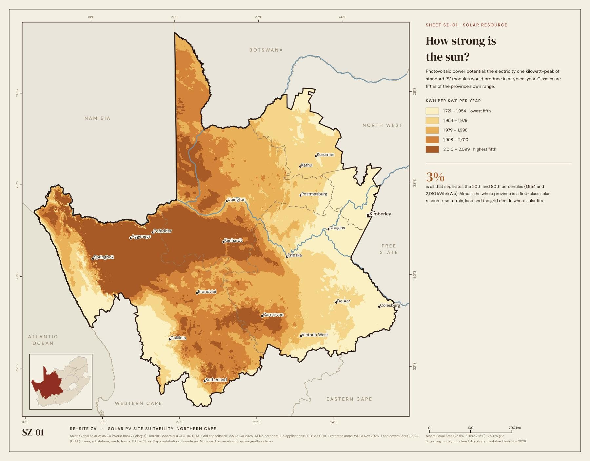
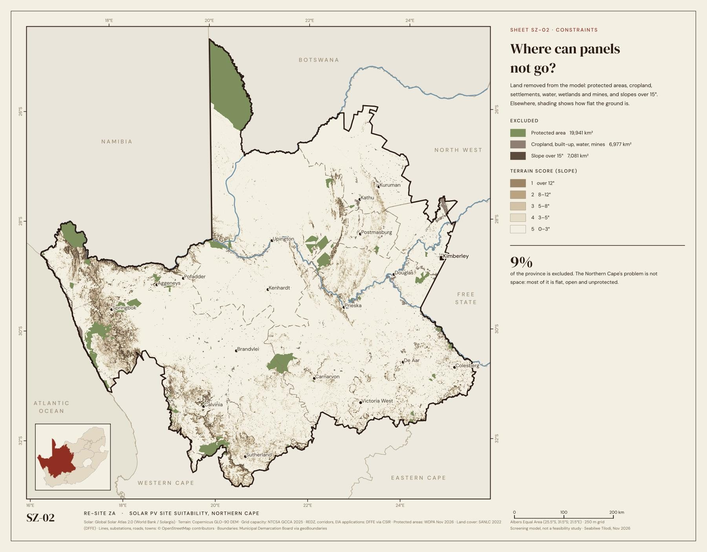
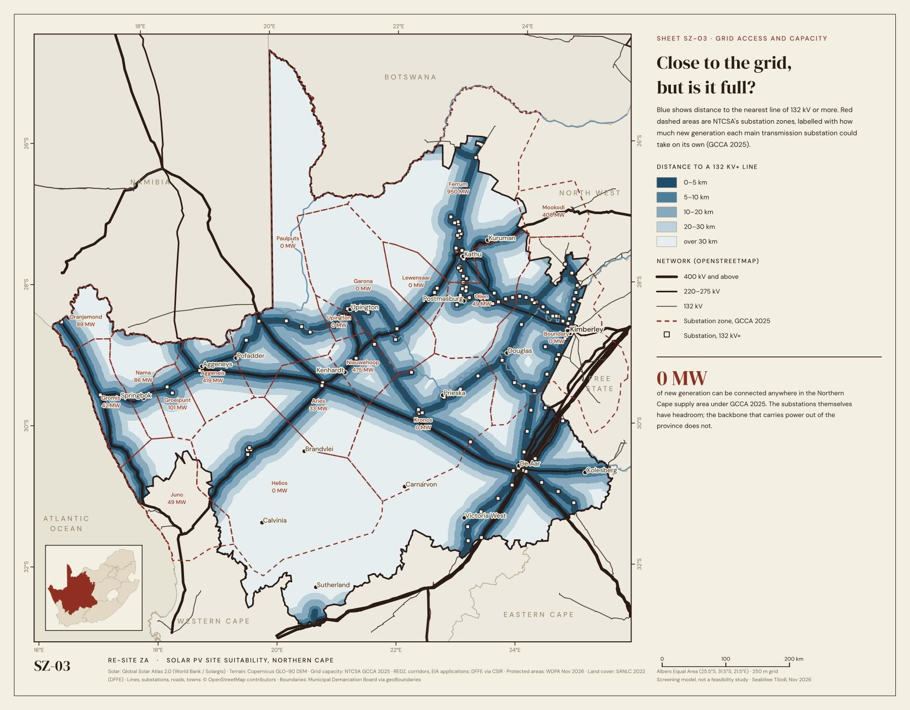
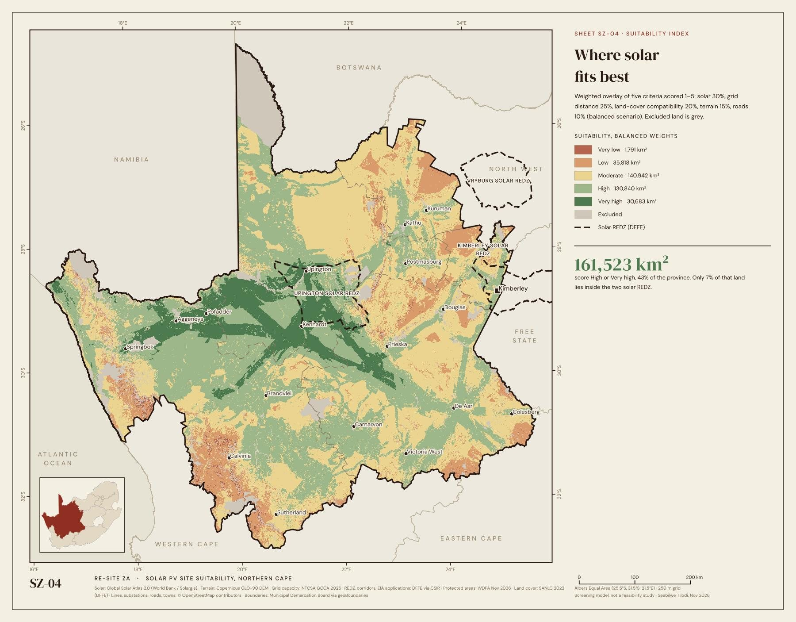
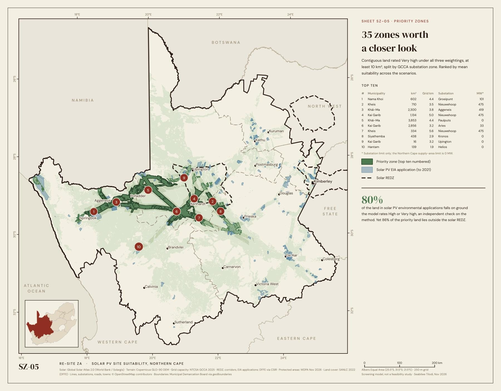

RE-SITE ZA: where should solar go in the Northern Cape?
A spatial decision-support model for utility-scale solar PV. It weighs sun, terrain, land cover, roads and the grid across all 372,889 km² of the Northern Cape, tests how much the answer depends on the weights, and checks the result against where developers have actually applied to build.
What the model found
- 0 MWof new generation the Northern Cape supply area can connect under NTCSA's GCCA 2025, the same as in the 2023 and 2024 assessments.
- 65,445 km²rated High or Very high under all three weighting scenarios.
- 35 zonescovering about 15,328 km² rated Very high in every scenario, ranked for a closer look.
- 80%of the land in solar PV environmental applications (to 2021) sits on ground the model rates High or better.
The Northern Cape has more good solar land than anyone could build on: almost half the province scores High or better. What it lacks is a way to move the power out. The best-scoring ground follows the main transmission lines across the middle of the province, from Aggeneys through Kenhardt towards De Aar. Several substations along them still have headroom of their own, but the transmission backbone behind them is full. The model's shortlist therefore points to where new transmission investment would unlock the most suitable land, rather than to sites that could connect tomorrow.
The six map sheets
Select a sheet to open it at full size.
-

SZ-01 How strong is the sun?
Photovoltaic power potential from the Global Solar Atlas, in fifths of the province's own range. The middle 60% of the province lies between 1,954 and 2,010 kWh per kWp a year, a spread of about 3%. The sun alone cannot pick the sites.
-

SZ-02 Where can panels not go?
Protected areas (19,941 km²), cropland, settlements, water and mines from SANLC 2022 (6,977 km²) and slopes over 15° (7,081 km²) are removed: 9% of the province. The rest is shaded by slope.
-

SZ-03 Close to the grid, but is it full?
Distance to lines of 132 kV and above, with NTCSA's main transmission substation zones and what each substation could accept on its own. Under GCCA 2025 the Northern Cape supply area as a whole can take 0 MW of new generation.
-

SZ-04 Where solar fits best
The balanced weighted overlay. 161,523 km² (43% of the province) scores High or Very high; only 7% of that land lies inside the solar Renewable Energy Development Zones.
-

SZ-05 35 zones worth a closer look
Contiguous land rated Very high under every weighting, at least 10 km², split by GCCA substation zone and ranked. 86% of this priority land lies outside the solar REDZ.
-
SZ-06 Does the answer change with the weights?
The model run energy-led, infrastructure-led and balanced. 65,445 km² stays High or Very high in all three runs, concentrated along the transmission corridors from Aggeneys through Kenhardt towards De Aar.


Top ten priority zones
Ranked by mean suitability across the three scenarios. MW is the GCCA 2025 limit for the substation itself; the supply-area limit is 0 MW for all of them.
| # | Municipality | Area, km² | PV output, kWh/kWp | To 132 kV+ line, km | GCCA substation zone | Substation limit, MW | In solar REDZ |
|---|---|---|---|---|---|---|---|
| 1 | Nama Khoi | 602 | 2,074 | 4.4 | Groeipunt | 101 | 0% |
| 2 | !Kheis | 710 | 2,013 | 3.5 | Nieuwehoop | 475 | 62% |
| 3 | Khâi-Ma | 2,300 | 2,061 | 3.8 | Aggeneis | 419 | 0% |
| 4 | Kai Garib | 1,134 | 2,015 | 5.0 | Nieuwehoop | 475 | 72% |
| 5 | Khâi-Ma | 3,853 | 2,039 | 4.4 | Paulputs | 0 | 0% |
| 6 | Kai Garib | 2,856 | 2,024 | 3.2 | Aries | 33 | 0% |
| 7 | !Kheis | 334 | 2,012 | 5.6 | Nieuwehoop | 475 | 0% |
| 8 | Siyathemba | 438 | 2,009 | 2.9 | Kronos | 0 | 6% |
| 9 | Kai Garib | 16 | 1,999 | 3.2 | Upington | 0 | 100% |
| 10 | Hantam | 139 | 2,012 | 1.9 | Helios | 0 | 0% |
Method
Every layer was brought into an Albers equal-area projection for the province and onto a common 250 m grid. Five criteria were scored from 1 (poor) to 5 (good):
- Solar resource (30%): Global Solar Atlas PV power potential, scored by the province's own quintiles.
- Grid access (25%): distance to OpenStreetMap power lines of 132 kV and above (5, 10, 20 and 30 km bands).
- Land-cover compatibility (20%): SANLC 2022 classes. Open shrubland, grassland and bare ground score high; fallow fields score well because they are already disturbed; Succulent Karoo and fynbos are scored down as biodiversity hotspots.
- Terrain (15%): slope from the Copernicus 90 m DEM (0–3°, 3–5°, 5–8°, 8–12°, over 12°).
- Road access (10%): distance to primary and secondary roads (2, 5, 10 and 20 km bands).
Protected areas, active cropland, built-up land, mines, water, wetlands, plantations and slopes over 15° were masked out rather than scored low. The weighted sum was classed Very low to Very high (breaks at 1.8, 2.6, 3.4 and 4.2) and run three times: energy-led (solar 45%), infrastructure-led (grid 40%) and balanced. Priority zones are contiguous areas rated Very high in all three runs, at least 10 km², split by GCCA substation zone and joined to their municipality, substation limit and REDZ overlap.
The whole workflow is scripted in PyQGIS, GDAL and NumPy inside QGIS, from download to the print layouts, so it can be rerun with new data or weights in a few minutes.
Limits
- This is strategic screening, not a feasibility study. Grid connection, environmental authorisation, land ownership and project economics all need site-level work.
- Distance to a line is not capacity. GCCA 2025 shows no supply-area capacity, and the curtailment-based capacity updates published since are not modelled.
- At 250 m, small irrigated fields along the Orange River are partly lost when land cover is generalised.
- The applications layer is the 2021 edition served by CSIR, and an application is not a built plant.
Data
- Solar: Global Solar Atlas 2.0, World Bank Group and Solargis (CC BY 4.0).
- Terrain: Copernicus DEM GLO-90 (© DLR e.V. 2010–2014 and © Airbus 2014–2018, provided under Copernicus by ESA).
- Grid capacity: NTCSA Generation Connection Capacity Assessment 2025, results table and GIS zones.
- REDZ, power corridors and renewable energy EIA applications: DFFE, via the CSIR map service.
- Land cover: South African National Land Cover 2022, DFFE.
- Protected areas: World Database on Protected Areas, November 2026 (UNEP-WCMC and IUCN).
- Power lines, substations, roads and towns: © OpenStreetMap contributors (ODbL).
- Boundaries: Municipal Demarcation Board, via geoBoundaries (CC BY 4.0).